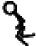
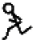
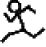
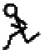

16
Completing the Mr. Stick Man Game

In the previous three chapters, we’ve been developing our game: Mr. Stick Man Races for the Exit . We created the graphics, and then wrote code to add the background image, platforms, and stick figure. In this chapter, we’ll fill in the missing pieces to animate the stick figure and add the door. You’ll find the full listing for the complete game at the end of this chapter. If you get lost or become confused when writing some of this code, compare your code with that listing to see where you might have gone wrong.
Animating the Stick Figure
So far, we’ve created a basic class for our stick figure, loading the images we’ll be using and binding keys to some functions. But none of our code will do anything particularly interesting if you run the game at this point.
Now we’ll add the remaining functions to the StickFigureSprite class we created in Chapter 15 : animate , move , and coords . The animate function will draw the different stick figure images; move will determine where the character needs to move to; and coords will return the stick figure’s current position. (Unlike with the platform sprites, we need to recalculate the position of the stick figure as he moves around the screen.)
Creating the Animate Function
First, we’ll add the animate function, which will need to check for movement and change the image accordingly.
Checking for Movement
We don’t want to change the stick figure image too quickly in our animation, or its movement won’t look realistic. Think about a flip animation, drawn in the corner of a notepad—if you flip the pages too quickly, you may not get the full effect of what you’ve drawn.
The first half of the animate function checks to see if the stick figure is running to the left or right, and then uses the last_time variable to decide whether to change the current image. This variable will help us control the speed of our animation. The function will go after the jump function, which we added to our StickFigureSprite class in Chapter 15 ( page 238 ):
def animate(self): if self.x != 0 and self.y == 0: if time.time() - self.last_time > 0.1: self.last_time = time.time() self.current_image += self.current_image_add if self.current_image >= 2: self.current_image_add = -1 if self.current_image <= 0: self.current_image_add = 1
In the first if statement, we check to see if x is not 0 to determine whether the stick figure is moving (either left or right), and we check to see if y is 0 to determine that the stick figure is not jumping. If this if statement is True , we need to animate our stick figure; if not, he’s standing still, so there’s no need to keep drawing. If the stick figure isn’t moving, we drop out of the function, and the rest of the code in this listing is ignored.
We then calculate the amount of time since the animate function was last called, by subtracting the value of the last_time variable from the current time, using time.time() . This calculation is used to decide whether to draw the next image in the sequence. If the result is greater than a tenth of a second (0.1), we continue with the block of code. We set the last_time variable to the current time, basically resetting the stopwatch to start timing again for the next image change.
Next, we add the value of the object variable current_image_add to the variable current_image , which stores the index position of the currently displayed image. Remember that we created the current_image_add variable in the stick figure’s __init__ function in Chapter 15 (see page 235 ), so when the animate function is first called, the value of the variable has already been set to 1.
Then, we check to see if the value of the index position in current_image is greater than or equal to 2; if so, we change the value of current_image_add to –1. The process is similar for the last two lines; once we reach 0, we need to start counting up again.
Note
If you’re having trouble figuring out how to indent this code, here’s a hint: there are 8 spaces at the line beginning if self.x and 20 spaces at the last line.
To help you understand what’s going on in the function so far, imagine that you have a sequence of colored blocks in a line on the floor. You move your finger from one block to the next, and each block that your finger points to has a number (1, 2, 3, 4, and so on)—this is the current_image variable. The number of the block your finger moves to (it points at one block at a time) is the number stored in the current_image_add variable. When your finger moves one way up the line of blocks, you’re adding 1 each time, and when it hits the end of the line and moves back down, you’re subtracting 1 (adding –1).
The code we’ve added to our animate function performs this process, but instead of colored blocks, we have the three stick figure images for each direction stored in a list. The index positions of these images are 0, 1, and 2. As we animate the stick figure, once we reach the last image, we start counting down, and once we reach the first image, we need to start counting up again. As a result, we create the effect of a running figure.
Table 16-1 shows how we move through the list of images, using the index positions we calculate in the animate function.
Table 16-1: Image Positions in Animation
|
Position 0 |
Position 1 |
Position 2 |
Position 1 |
Position 0 |
Position 1 |
|---|---|---|---|---|---|
|
Counting up |
Counting up |
Counting up |
Counting down |
Counting down |
Counting up |
|

|

|

|

|

|
|
Changing the Image
In the next half of the animate function, we change the currently displayed image, using the calculated index position:
def animate(self): ... if self.x < 0: if self.y != 0: self.game.canvas.itemconfig(self.image, image=self.images_left[2]) ➊ else: self.game.canvas.itemconfig(self.image, image=self.images_left[self.current_image]) elif self.x > 0: if self.y != 0: self.game.canvas.itemconfig(self.image, image=self.images_right[2]) else: self.game.canvas.itemconfig(self.image, image=self.images_right[self.current_image])
Firstly, if x is less than 0, the stick figure is moving left, so Python moves into the block of code, which checks whether y is not equal to 0 (meaning the stick figure is jumping). If y is not equal to 0 (the stick figure is jumping), we use the canvas’s itemconfig function to change the displayed image to the last image in our list of left-facing images at images_left[2] . Because the stick figure is jumping, we’ll use the image showing him in full stride to make the animation look a bit more realistic, as you can see in Figure 16-1 .
Figure 16-1: Jumping images
If the stick figure is not jumping (that is, y is equal to 0), the else block ➊ uses itemconfig to change the displayed image to whatever index position is in the variable current_image .
At the elif statement, we see if the stick figure is running right ( x is greater than 0), and Python moves into the code block. This code is very similar to the first block, again checking whether the stick figure is jumping and drawing the correct image if so, except that it uses the images_right list.
Getting the Stick Figure’s Position
Because we’ll need to determine where the stick figure is on the screen (since he’s moving around), the coords function will differ from the other Sprite class functions. We’ll use the coords function of the canvas to determine where the stick figure is, and then use those values to set the x1 , y1 and x2 , y2 values of the coordinates variable we created in the __init__ function at the beginning of Chapter 15 . Add the following code after the animate function:
def coords(self): xy = self.game.canvas.coords(self.image) self.coordinates.x1 = xy[0] self.coordinates.y1 = xy[1] self.coordinates.x2 = xy[0] + 27 self.coordinates.y2 = xy[1] + 30 return self.coordinates
When we created the Game class in Chapter 14 , one of the object variables was the canvas . We use the coords function of this canvas variable (with self.game.canvas.coords ), which takes the identifier of something drawn on the canvas, and returns the x and y positions as a list of two numbers. In this case, we use the identifier stored in the variable current_image and store the returned list in the variable xy . We then use the two values to set the coordinates for our stick figure. The value xy[0] (that’s the first number in the list) becomes our x1 coordinate, and the value xy[1] (the second number in the list) becomes our y1 coordinate. So that’s the top-left position of the figure.
Because all of the stick figure images we created are 27 pixels wide by 30 pixels high, we can determine what the x2 and y2 variables should be (that’s the bottom-right position of the figure) by adding the width and the height to the xy[0] and xy[1] values, respectively.
So, if self.game.canvas.coords(self.image) returns [270, 350] we will end up with the following values:
- self.coordinates.x1 will be 270
- self.coordinates.y1 will be 350
- self.coordinates.x2 will be 297
- self.coordinates.y2 will be 380
Finally, on the last line of the function, we return the object variable coordinates that we just updated.
Making the Stick Figure Move
The final function of the StickFigureSprite class, move , is in charge of actually moving our game character around the screen. It also needs to be able to tell us when the character has bumped into something.
Starting the move Function
The following code is for the first part of the move function. This will go after coords :
def move(self): self.animate() if self.y < 0: self.jump_count += 1 if self.jump_count > 20: self.y = 4 if self.y > 0: self.jump_count -= 1
The first line ( self.animate() ) calls the function we created earlier in this chapter, which changes the currently displayed image if necessary. Then, we see whether the value of y is less than 0. If it is, we know that the stick figure is jumping because a negative value will move him up the screen. (Remember that 0 is at the top of the canvas, and the bottom of the canvas is pixel position 500.)
Next, we add 1 to jump_count . We want our stick figure to jump up, but not to keep floating up the screen forever (it’s jumping, after all), so we use that variable to count the number of times we have executed the move function—if it reaches 20, we should change y to 4 to start the stick figure falling again.
We then see if the value of y is greater than 0 (meaning the character must be falling); if it is, we subtract 1 from jump_count because once we’ve counted up to 20, we need to count back down again. (Move your hand slowly up in the air while counting to 20, and then move it back down again while counting down from 20, and you’ll get a sense of how calculating the stick figure jumping up and down is supposed to work.)
In the next few lines of the move function, we call the coords function, which tells us where our character is on the screen, and then store its result in the co variable. We then create the variables left , right , top , bottom , and falling . We’ll use each in the remainder of this function:
co = self.coords()
left = True
right = True
top = True
bottom = True
falling = True
Notice that each variable has been set to the Boolean value True . We’ll use these as indicators to check whether the character has hit something on the screen or is falling.
Has the Stick Figure Hit the Bottom or Top of the Canvas?
The next section of the move function checks whether our character has hit the bottom or top of the canvas. Add the following code:
if self.y > 0 and co.y2 >= self.game.canvas_height: self.y = 0 bottom = False elif self.y < 0 and co.y1 <= 0: self.y = 0 top = False
If the character is falling down the screen, y will be greater than 0, so we need to make sure it hasn’t yet hit the bottom of the canvas (or it will vanish off the bottom of the screen). To do so, we see if its y2 position (the bottom of the stick figure) is greater than or equal to the canvas_height variable of the game object. If it is, we set the value of y to 0 to stop the stick figure from falling, and then set the bottom variable to False , which tells the remaining code that we no longer need to see if the stick figure has hit the bottom.
The process of determining whether the stick figure has hit the top of the screen is very similar to the way we determine whether he has hit the bottom. To do so, we first see if the stick figure is jumping ( y is less than 0), and then we see if his y1 position is less than or equal to 0, meaning he has hit the top of the canvas. If both conditions are true, we set y equal to 0 to stop the movement. We also set the top variable to False to tell the remaining code that we no longer need to see if the stick figure has hit the top.
Has the Stick Figure Hit the Side of the Canvas?
We follow almost exactly the same process as in the preceding code to determine whether the stick figure has hit the right and left sides of the canvas, as follows:
if self.x > 0 and co.x2 >= self.game.canvas_width: self.x = 0 right = False elif self.x < 0 and co.x1 <= 0: self.x = 0 left = False
The if statement is based on the fact that we know the stick figure is running to the right if x is greater than 0. We also know whether he has hit the right-hand side of the screen by seeing if the x2 position ( co.x2 ) is greater than or equal to the width of the canvas stored in canvas_width . If either statement is true, we set x equal to 0 (to stop the stick figure from running) and set the right or left variables to False .
Colliding with Other Sprites
Once we’ve determined whether the figure has hit the sides of the screen, we need to see if he has hit anything else on the screen. We use the following code to loop through the list of sprite objects stored in the game object to see if the stick figure has hit any of them:
for sprite in self.game.sprites: if sprite == self: continue sprite_co = sprite.coords() if top and self.y < 0 and collided_top(co, sprite_co): self.y = -self.y top = False
At the for statement, we loop through the list of sprites, assigning each one in turn to the variable sprite . Then we say that if the sprite is equal to self (that’s another way of saying, “if this particular sprite is actually me”), we don’t need to determine whether the stick figure has collided because he would have only hit himself. If the sprite variable is equal to self , we use continue to jump to the next sprite in the list ( continue simply tells Python to ignore the rest of the code in the block and continue the loop).
Next, we get the coordinates of the new sprite by calling its coords function and storing the results in the sprite_co variable.
The final if statement checks for the following:
- The stick figure has not hit the top of the canvas (the top variable is still true).
- The stick figure is jumping (the y value is less than 0).
- The top of the stick figure has collided with the sprite from the list (using the collided_top function we created on page 224 ).
If all of these conditions are true, we want the sprite to start falling back down again, so we reverse the value of the y variable ( self.y becomes -self.y ). The top variable is set to False because once the stick figure has hit the top, we don’t need to keep checking for a collision.
Colliding at the Bottom
The next part of the loop checks to see if the bottom of our character has hit something:
if bottom and self.y > 0 and collided_bottom(self.y, co, sprite_co): self.y = sprite_co.y1 - co.y2 if self.y < 0: self.y = 0 bottom = False top = False
We start with three similar checks: whether the bottom variable is still set, whether the character is falling ( y is greater than 0), and whether the bottom of our character has hit the sprite. If all three checks are true, we subtract the bottom y value ( y2 ) of the stick figure from the top y value of the sprite ( y1 ). This might seem strange, so let’s discuss why we do this.
Imagine that our game character has fallen off a platform. He moves down the screen 4 pixels each time the mainloop function runs, until the foot of the stick figure is 3 pixels above another platform. Let’s say the stick figure’s bottom ( y2 ) is at position 57, and the top of the platform ( y1 ) is at position 60. In this case, the collided_bottom function would return True , because its code will add the value of y (which is 4) to the stick figure’s y2 variable, resulting in 61.
However, we don’t want Mr. Stick Man to stop falling as soon as it looks like he’ll hit a platform or the bottom of the screen, because that would be like taking a huge jump off a step and stopping in midair, an inch above the ground. That may be a neat trick, but it won’t look right in our game. Instead, if we subtract the character’s y2 value (57) from the platform’s y1 value (60), we get 3, the amount the stick figure should drop in order to land properly on top of the platform.
We continue by making sure the calculation doesn’t result in a negative number ( if self.y < 0: ); if it does, we set y equal to 0. (If we let the number be negative, the stick figure would fly back up again, and we don’t want that to happen.)
Finally, we set the top and bottom flags to False , so we no longer need to check whether the stick figure has collided at the top or bottom with another sprite.
We’ll follow this code with one more “bottom” check to see whether the stick figure has run off the edge of a platform. Here’s the code for this if statement:
if bottom and falling and self.y == 0 \ and co.y2 < self.game.canvas_height \ and collided_bottom(1, co, sprite_co): falling = False
For the falling variable to be set to False , we must check that the following five elements are all true:
- The bottom flag is set to True .
- The stick figure should be falling (the falling flag is still set to True ).
- The stick figure isn’t already falling ( y is 0).
- The bottom of the sprite hasn’t hit the bottom of the screen (it’s less than the canvas height).
- The stick figure has hit the top of a platform ( collided_bottom returns True ).
Then we set the falling variable to False to stop the figure from dropping down the screen.
Note
You can check whether the value of a Boolean variable is True in an if statement by simply referencing the variable. For example, if bottom == True and falling == True can be rewritten simply as if bottom and falling (as we did above).
Checking Left and Right
We’ve checked whether the stick figure has hit a sprite at the bottom or the top. Now we need to check whether he has hit the left or right side, with this code:
if left and self.x < 0 and collided_left(co, sprite_co): self.x = 0 left = False if right and self.x > 0 and collided_right(co, sprite_co): self.x = 0 right = False
First, we see if we should still be looking for collisions to the left ( left is still set to True ) and whether the stick figure is moving to the left ( x is less than 0). We also check to see if the stick figure has collided with a sprite by using the collided_left function. If these three conditions are true, we set x equal to 0 (to make the stick figure stop running), and set left to False , so that we no longer check for collisions on the left.

The code is similar for collisions to the right. We set x equal to 0 again, and set right to False , to stop checking for right-hand collisions.
Now, with checks for collisions in all four directions, our for loop should look like this:
for sprite in self.game.sprites: if sprite == self: continue sprite_co = sprite.coords() if top and self.y < 0 and collided_top(co, sprite_co): self.y = -self.y top = False if bottom and self.y > 0 and collided_bottom(self.y, co, sprite_co): self.y = sprite_co.y1 - co.y2 if self.y < 0: self.y = 0 bottom = False top = False if bottom and falling and self.y == 0 \ and co.y2 < self.game.canvas_height \ and collided_bottom(1, co, sprite_co): falling = False if left and self.x < 0 and collided_left(co, sprite_co): self.x = 0 left = False if right and self.x > 0 and collided_right(co, sprite_co): self.x = 0 right = False
We need to add only a few more lines to the move function, as follows:
if falling and bottom and self.y == 0 \ and co.y2 < self.game.canvas_height: self.y = 4 self.game.canvas.move(self.image, self.x, self.y)
We check whether both the falling and bottom variables are set to True . If so, we’ve looped through every platform sprite in the list without colliding at the bottom.
The final check in this line determines whether the bottom of our character is less than the canvas height—that is, above the ground (the bottom of the canvas). If the stick figure hasn’t collided with anything and is above the ground, he is standing in midair, so he should start falling (in other words, he has run off the end of a platform). To make him run off the end of any platform, we set y equal to 4.
Lastly, we move the image across the screen, according to the values we set in the variables x and y . The fact that we’ve looped through the sprites checking for collisions may mean that we’ve set both variables to 0, because the stick figure has collided on the left and with the bottom. In that case, the call to the move function of the canvas will actually do nothing.
It may also be the case that Mr. Stick Man has walked off the edge of a platform. If that happens, y will be set to 4 and Mr. Stick Man will fall downward.
Phew, that was a long function!
Testing Our Stick Figure Sprite
Having created the StickFigureSprite class, let’s try it out by adding the following two lines just before the call to the mainloop function:
sf = StickFigureSprite(g) g.sprites.append(sf)
We create a StickFigureSprite object and label it with the sf variable. As we did with the platforms, we add this new variable to the list of sprites stored in the game object.
Now run the program. You should find that Mr. Stick Man can run, jump from platform to platform, and fall!
The Exit!
The only thing missing from our game is the exit. We’ll finish up by creating a sprite for the door, adding code to detect the door, and giving our program a door object.
Creating the DoorSprite Class
We need to create one more class: DoorSprite . The start of the code is as follows:
class DoorSprite(Sprite): def __init__(self, game, photo_image, x, y, width, height): Sprite.__init__(self, game) self.photo_image = photo_image self.image = game.canvas.create_image(x, y, image=self.photo_image, anchor='nw') self.coordinates = Coords(x, y, x + (width / 2), y + height) self.endgame = True
The __init__ function of the DoorSprite class has parameters for self , a game object, a photo_image object, the x and y coordinates, and the width and height of the image. We call Sprite.__init__ as with our other sprite classes.

We then save the parameter photo_image using an object variable with the same name, as we did with PlatformSprite . We create a display image using the canvas create_image function and save the identifying number returned by that function using the object variable image .
Next, we set the coordinates of DoorSprite to the x and y parameters (which become the x1 and y1 positions of the door), and then calculate the x2 and y2 positions. We calculate the x2 position by adding half of the width (the width variable divided by 2) to the x parameter. For example, if x is 10 (the x1 coordinate is also 10) and the width is 40, the x2 coordinate would be 30 (10 plus half of 40).
Why use this confusing little calculation? Because, unlike with the platforms, where we want Mr. Stick Man to stop running as soon as he collides with the side of the platform, we want him to stop in front of the door. You’ll see this in action when you play the game and make it to the door.
Unlike the x1 position, the y1 position is simple to calculate. We just add the value of the height variable to the y parameter, and that’s it.
Finally, we set the endgame object variable to True . This says that when the stick figure reaches the door, the game ends.
Detecting the Door
Now we need to change the code in the StickFigureSprite class of the move function that determines when the stick figure has collided with a sprite on the left or the right. Here’s the first change:
if left and self.x < 0 and collided_left(co, sprite_co): self.x = 0 left = False if sprite.endgame: self.game.running = False
We check to see if the stick figure has collided with a sprite that has an endgame variable set to True . If it does, we set the running variable to False , and everything stops—we’ve reached the end of the game.
We’ll add these same lines to the code that checks for a collision on the right. Here’s the code:
if right and self.x > 0 and collided_right(co, sprite_co): self.x = 0 right = False if sprite.endgame: self.game.running = False
Adding the Door Object
Our final addition to the game code is an object for the door. We’ll add this before the main loop. Just before creating the stick figure object, we’ll create a door object and then add it to the list of sprites. Here’s the code:
g.sprites.append(platform7) g.sprites.append(platform8) g.sprites.append(platform9) g.sprites.append(platform10) door = DoorSprite(g, PhotoImage(file='door1.gif'), 45, 30, 40, 35) g.sprites.append(door) sf = StickFigureSprite(g) g.sprites.append(sf) g.mainloop()
We create a door object using the variable for our game object, g , followed by a PhotoImage (the door image we created in Chapter 13 ). We set the x and y parameters to 45 and 30 to put the door on a platform near the top of the screen, and set the width and height to 40 and 35. We add the door object to the list of sprites, as with all the other sprites in the game.
You can see the result when Mr. Stick Man reaches the door. He stops running in front of the door, rather than next to it, as shown in Figure 16-2 .
Figure 16-2: Reaching the door
The Final Game
The full listing of our game is now a bit more than 200 lines of code. The following is the complete code for the game. If you have trouble getting your game to work, compare each function (and each class) to this listing:
from tkinter import * import random import time class Coords: def __init__(self, x1=0, y1=0, x2=0, y2=0): self.x1 = x1 self.y1 = y1 self.x2 = x2 self.y2 = y2 def within_x(co1, co2): if (co1.x1 > co2.x1 and co1.x1 < co2.x2) \ or (co1.x2 > co2.x1 and co1.x2 < co2.x2) \ or (co2.x1 > co1.x1 and co2.x1 < co1.x2) \ or (co2.x2 > co1.x1 and co2.x2 < co1.x2): return True else: return False def within_y(co1, co2): if (co1.y1 > co2.y1 and co1.y1 < co2.y2) \ or (co1.y2 > co2.y1 and co1.y2 < co2.y2) \ or (co2.y1 > co1.y1 and co2.y1 < co1.y2) \ or (co2.y2 > co1.y1 and co2.y2 < co1.y2): return True else: return False def collided_left(co1, co2): if within_y(co1, co2): if co1.x1 >= co2.x1 and co1.x1 <= co2.x2: return True return False def collided_right(co1, co2): if within_y(co1, co2): if co1.x2 >= co2.x1 and co1.x2 <= co2.x2: return True return False def collided_top(co1, co2): if within_x(co1, co2): if co1.y1 >= co2.y1 and co1.y1 <= co2.y2: return True return False def collided_bottom(y, co1, co2): if within_x(co1, co2): y_calc = co1.y2 + y if y_calc >= co2.y1 and y_calc <= co2.y2: return True return False class Sprite: def __init__(self, game): self.game = game self.endgame = False self.coordinates = None def move(self): pass def coords(self): return self.coordinates class PlatformSprite(Sprite): def __init__(self, game, photo_image, x, y, width, height): Sprite.__init__(self, game) self.photo_image = photo_image self.image = game.canvas.create_image(x, y, image=self.photo_image, anchor='nw') self.coordinates = Coords(x, y, x + width, y + height) class StickFigureSprite(Sprite): def __init__(self, game): Sprite.__init__(self, game) self.images_left = [ PhotoImage(file='figure-L1.gif'), PhotoImage(file='figure-L2.gif'), PhotoImage(file='figure-L3.gif') ] self.images_right = [ PhotoImage(file='figure-R1.gif'), PhotoImage(file='figure-R2.gif'), PhotoImage(file='figure-R3.gif') ] self.image = game.canvas.create_image(200, 470, image=self.images_left[0], anchor='nw') self.x = -2 self.y = 0 self.current_image = 0 self.current_image_add = 1 self.jump_count = 0 self.last_time = time.time() self.coordinates = Coords() game.canvas.bind_all('<KeyPress-Left>', self.turn_left) game.canvas.bind_all('<KeyPress-Right>', self.turn_right) game.canvas.bind_all('<space>', self.jump) def turn_left(self, evt): if self.y == 0: self.x = -2 def turn_right(self, evt): if self.y == 0: self.x = 2 def jump(self, evt): if self.y == 0: self.y = -4 self.jump_count = 0 def animate(self): if self.x != 0 and self.y == 0: if time.time() - self.last_time > 0.1: self.last_time = time.time() self.current_image += self.current_image_add if self.current_image >= 2: self.current_image_add = -1 if self.current_image <= 0: self.current_image_add = 1 if self.x < 0: if self.y != 0: self.game.canvas.itemconfig(self.image, image=self.images_left[2]) else: self.game.canvas.itemconfig(self.image, image=self.images_left[self.current_image]) elif self.x > 0: if self.y != 0: self.game.canvas.itemconfig(self.image, image=self.images_right[2]) else: self.game.canvas.itemconfig(self.image, image=self.images_right[self.current_image]) def coords(self): xy = self.game.canvas.coords(self.image) self.coordinates.x1 = xy[0] self.coordinates.y1 = xy[1] self.coordinates.x2 = xy[0] + 27 self.coordinates.y2 = xy[1] + 30 return self.coordinates def move(self): self.animate() if self.y < 0: self.jump_count += 1 if self.jump_count > 20: self.y = 4 if self.y > 0: self.jump_count -= 1 co = self.coords() left = True right = True top = True bottom = True falling = True if self.y > 0 and co.y2 >= self.game.canvas_height: self.y = 0 bottom = False elif self.y < 0 and co.y1 <= 0: self.y = 0 top = False if self.x > 0 and co.x2 >= self.game.canvas_width: self.x = 0 right = False elif self.x < 0 and co.x1 <= 0: self.x = 0 left = False for sprite in self.game.sprites: if sprite == self: continue sprite_co = sprite.coords() if top and self.y < 0 and collided_top(co, sprite_co): self.y = -self.y top = False if bottom and self.y > 0 and collided_bottom(self.y, co, sprite_co): self.y = sprite_co.y1 - co.y2 if self.y < 0: self.y = 0 bottom = False top = False if bottom and falling and self.y == 0 \ and co.y2 < self.game.canvas_height \ and collided_bottom(1, co, sprite_co): falling = False if left and self.x < 0 and collided_left(co, sprite_co): self.x = 0 left = False if sprite.endgame: self.game.running = False if right and self.x > 0 and collided_right(co, sprite_co): self.x = 0 right = False if sprite.endgame: self.game.running = False if falling and bottom and self.y == 0 \ and co.y2 < self.game.canvas_height: self.y = 4 self.game.canvas.move(self.image, self.x, self.y) class DoorSprite(Sprite): def __init__(self, game, photo_image, x, y, width, height): Sprite.__init__(self, game) self.photo_image = photo_image self.image = game.canvas.create_image(x, y, image=self.photo_image, anchor='nw') self.coordinates = Coords(x, y, x + (width / 2), y + height) self.endgame = True class Game: def __init__(self): self.tk = Tk() self.tk.title('Mr. Stick Man Races for the Exit') self.tk.resizable(0, 0) self.tk.wm_attributes('-topmost', 1) self.canvas = Canvas(self.tk, width=500, height=500, highlightthickness=0) self.canvas.pack() self.tk.update() self.canvas_height = self.canvas.winfo_height() self.canvas_width = self.canvas.winfo_width() self.bg = PhotoImage(file='background.gif') w = self.bg.width() h = self.bg.height() for x in range(0, 5): for y in range(0, 5): self.canvas.create_image(x * w, y * h, image=self.bg, anchor='nw') self.sprites = [] self.running = True def mainloop(self): while True: if self.running == True: for sprite in self.sprites: sprite.move() self.tk.update_idletasks() self.tk.update() time.sleep(0.01) g = Game() platform1 = PlatformSprite(g, PhotoImage(file='platform1.gif'), 0, 480, 100, 10) platform2 = PlatformSprite(g, PhotoImage(file='platform1.gif'), 150, 440, 100, 10) platform3 = PlatformSprite(g, PhotoImage(file='platform1.gif'), 300, 400, 100, 10) platform4 = PlatformSprite(g, PhotoImage(file='platform1.gif'), 300, 160, 100, 10) platform5 = PlatformSprite(g, PhotoImage(file='platform2.gif'), 175, 350, 66, 10) platform6 = PlatformSprite(g, PhotoImage(file='platform2.gif'), 50, 300, 66, 10) platform7 = PlatformSprite(g, PhotoImage(file='platform2.gif'), 170, 120, 66, 10) platform8 = PlatformSprite(g, PhotoImage(file='platform2.gif'), 45, 60, 66, 10) platform9 = PlatformSprite(g, PhotoImage(file='platform3.gif'), 170, 250, 32, 10) platform10 = PlatformSprite(g, PhotoImage(file='platform3.gif'), 230, 200, 32, 10) g.sprites.append(platform1) g.sprites.append(platform2) g.sprites.append(platform3) g.sprites.append(platform4) g.sprites.append(platform5) g.sprites.append(platform6) g.sprites.append(platform7) g.sprites.append(platform8) g.sprites.append(platform9) g.sprites.append(platform10) door = DoorSprite(g, PhotoImage(file='door1.gif'), 45, 30, 40, 35) g.sprites.append(door) sf = StickFigureSprite(g) g.sprites.append(sf) g.mainloop()
What You Learned
In this chapter, we completed our game, Mr. Stick Man Races for the Exit . We created a class for our animated stick figure and wrote functions to move him around the screen and animate him as he moves (changing from one image to the next to give the illusion of running). We’ve used basic collision detection to tell when he has hit the left or right sides of the canvas, and when he has hit another sprite, such as a platform or a door. We’ve also added collision code to tell when he hits the top of the screen or the bottom, and to make sure that when he runs off the edge of a platform, he tumbles down accordingly. We added code to tell when Mr. Stick Man has reached the door, so the game comes to an end.
Programming Puzzles
There’s a lot more we can do to improve the game. We can add code to make it more professional looking and more interesting to play. Try adding the following features and then compare your code with the solutions at http://python-for-kids.com .
#1: “You Win!”
Like the “Game Over” text in the Bounce! game we completed in Chapter 12 , add “You Win!” text when the stick figure reaches the door.
#2: Animating the Door
In Chapter 13 , we created two images for the door: one open and one closed. When Mr. Stick Man reaches the door, the door image should change to the open door, Mr. Stick Man should vanish, and the door image should revert to the closed door. This will give the illusion that Mr. Stick Man is exiting and closing the door as he leaves. You can do this by changing the DoorSprite class and the StickFigureSprite class.

#3: Moving Platforms
Try adding a new class called MovingPlatformSprite . This platform should move from side to side, making it more difficult for Mr. Stick Man to reach the door at the top. You can pick some platforms to be moving, and leave some platforms to be static, depending on how hard you want your game to be.
#4: Lamp as a Sprite
Instead of the bookshelf and lamp we added as background images in Chapter 14 ’s third programming puzzle, try adding a lamp that the stick man has to jump over. Rather than being a part of the game’s background, it will be a sprite similar to the platforms or the door.